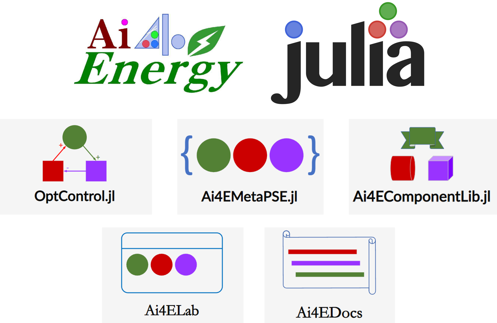

Ai4EDocs

- 智慧能源：从概念到实践
- OptControl.jl 对MTK中ODESystem的最优控制支持包。
- Ai4ELab 虚拟仿真实验室
- Ai4EComponentLib.jl 组件库
- Ai4EMetaPSE.jl 微分方程的Json文件解析器
- Ai4Server 基于Genie.jl架构的Ai4E后端服务框架。
Ai4EDocs简介
Ai4EDocs是Ai4E小组在学习中整理的一些可操作案例。案例的核心主要与建模仿真优化控制相关。文档主要特点为：
- 既有数学层面的探究，也包含了应用层面的案例。
- 包含大量Julia生态中软件包的使用
- 兼顾建模仿真优化控制核心与拓展
- 分享对理论抽象问题的认识
- 分享软件使用过程中的技巧
- 分享学习的心路历程与对库使用的理解
- Ai4Energy组的合作开发流程
供学习参考。

欢迎贡献文档！

文档内容
总篇数：72编程基础入门知识
- Windows的命令提示符简介
- PowerShell和Windows Terminal
- 环境变量简介
- Windows下安装gcc编译器和CLion
- make和Makefile介绍
- 静态链接库和动态链接库
- 以SAM为例实操
- 以CoolProp为例的实操
- 动态链接库(DLL)的生成与调用实操
Julia入门
物联网、大数据和云计算
理解计算进阶
建模
- DifferentialEquations建模方法
- ModelingToolkit建模方法
- ModelingToolkit调用外部函数
- MTK常见问题
- 组织方程的艺术——组件化（入门）
- MTK的"前世今生"
- 数学视角下的神经网络
仿真
优化
控制
框架
附录之工具准备
附录之工作流程
附录之Julia资源传送门
基础文档
数值计算
- DifferentialEquations.jl（常微分方程求解包）
- NeuralPDE.jl（偏微分方程求解包）
- JuMP.jl（优化求解器包）
- DiffEqParamEstim.jl（基于DE的参数辨识包）
- Flux.jl Julia机器学习包(The Julia Machine Learning Library)
- EquationsSolver 自制的小型方程（组）求解器
- Optimization.jl(Sciml优化包)
符号计算
- ModelingToolkit.jl（符号建模包）
- Symbolics.jl（MTK依赖的符号求解包）
- SymPy.jl 符号计算包（可求方程解析解），与Matlab中的符号工具包类似
计算图形学
数据处理
- FileIO.jl Julia中不同类型文件读入的统一接口（包括MeshIO）
- CSV.jl
- DataFrames.jl（大规模数据批量处理包）
- Unitful（单位计算包）
- JSON3.jl JSON到类型的读入
- JSON.jl
可视化
- Plots.ji（可视化包）
- Pkg.jl 包管理
- Makie.jl 高性能绘图包。
- PlotlyJS.jl 网页绘图，图可拖动。
WEB框架
- Geine.jl and Stipple.jl Julia Web 框架Geine和Stipple的文档
- HTTP.jl